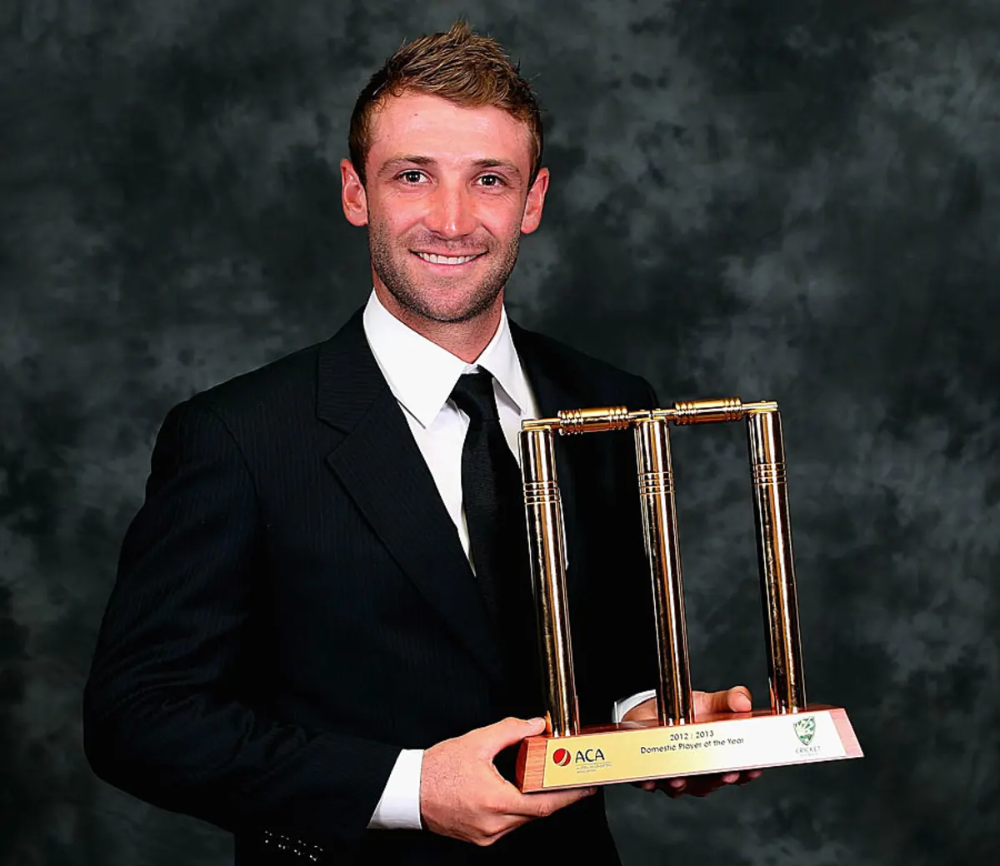

Awards and Achievements
- New South Wales Rising Star Award (2008): Acknowledged for his outstanding debut season with New South Wales.
- Bradman Young Cricketer of the Year (2009): Honored at the Allan Border Medal ceremony for his exceptional performance as a young cricketer.
- Sheffield Shield Player of the Year (2008/09): Recognized for his prolific run-scoring in the domestic circuit.
- Domestic Player of the Year (2012/13): Awarded at the Allan Border Medal ceremony for his stellar performances in Australian domestic cricket.